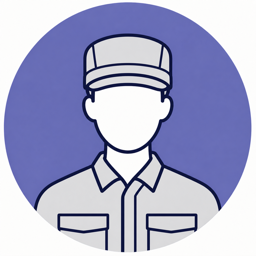
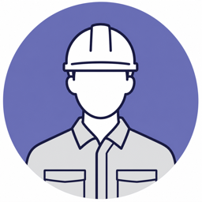
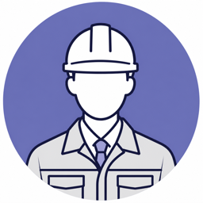
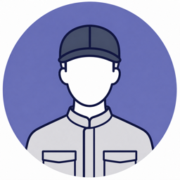

29歳・製造オペレーター
大手メーカーに行きたい。でも現場上がりでは書類で落ちそう。
施工管理・整備士・製造職から、大手・優良メーカーへ。
年収を守りながら、土日休み・日勤・出張なしを目指せます。

大手メーカーに行きたい。でも現場上がりでは書類で落ちそう。

夜勤・交替勤務がきつい。年収は下げずに日勤へ変えたい。

長期出張ばかりで、家に帰れるのは月に数回だけ。

土日休みで年収も維持したい。わがままだと思って言えない。
ギブクリエーションなら、働き方も年収も、変えられます。
求人の数だけではなく、入社後の働き方まで。現場経験者が本当に知りたい情報を確認してから提案します。
本人には当たり前の経験も、企業にとっては価値ある強みです。技術や実績を丁寧に棚卸しし、企業ごとの採用背景に合わせて、採用担当に響く職務経歴書へ仕上げます。
求人票だけでは分からない残業の実測値、出張の頻度、休日出勤の実際まで企業へ直接ヒアリング。「入ってみたら違った」を防ぎます。
年収・日勤・土日休み・勤務地。最初に「これだけは譲れない」を整理し、条件に合う求人だけをご提案。無理に応募を勧めることはありません。
職種を選ぶと求人例が切り替わります。非公開求人を含め、条件に合わせて個別にご案内します。
※求人内容は一例です。募集状況やご経験によりご紹介可能な求人は異なります。
登録から内定まで、すべて無料。書類作成や日程調整も担当者がサポートします。
フォーム入力は約60秒。今すぐ転職しなくても大丈夫です。
平日夜・土曜も対応。譲れない条件を一緒に整理します。
残業・出張・休日の実態とセットで求人をご案内します。
書類、面接、年収交渉まで伴走。納得できる入社を支えます。
「転職するかどうか」から一緒に考えるのが私たちの仕事です。今のお気持ちに近い入口を選んでください。
完全無料です。採用企業から紹介料をいただく仕組みのため、求職者の方に費用が発生することはありません。
もちろんです。ご相談者の約4割は情報収集からのスタートです。今の職場に残る判断になっても問題ありません。
平日夜・土曜、オンラインや電話でも面談できます。書類作成や日程調整も担当者がサポートします。
全国対応です。「地元を離れたくない」「通勤圏内で」など、勤務地条件を優先したご提案が可能です。
ご希望の連絡手段と時間帯を伺い、それ以外の連絡はしません。「今回は見送る」と言っていただければ営業も止めます。
転職を決めていなくても構いません。今の経験で選べる求人と、年収・休日の可能性を一緒に整理します。
担当アドバイザーより1営業日以内にご連絡します。